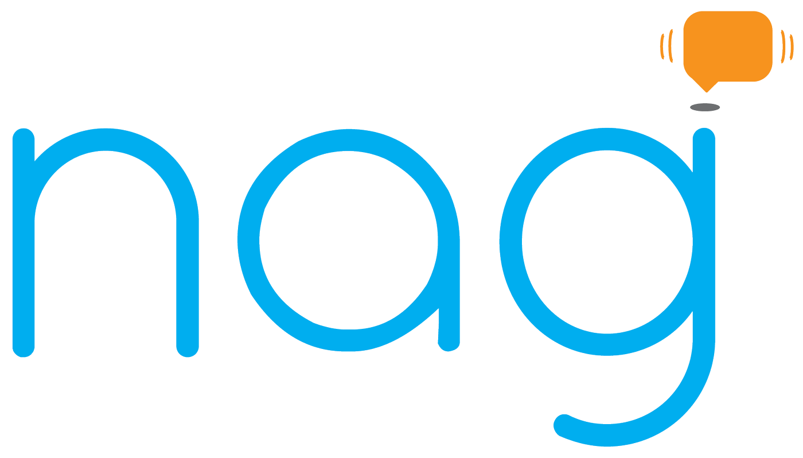

Will Piers - Javascript Aficionado

I am a web developer and math enthusiast originally from Boulder, Colorado. I like to play games (chess), write code (Ruby, JS, HTML, CSS, React js), play basketball, and spend time with my friends, and family. I have also been known to engage in lengthy conversations about the nascent singularity over a cold craft beer.
In fall of 2015, I decided to get back into startup mode. I found InfluxDB and really enjoyed the team, the vision and the suite of products they were building. It didn't hurt that they were located in beautiful San Francisco. I joined the team to help build Chronograf, a graphing and dashboarding tool to visualize data stored in InfluxDB. It's been fun to build, in part because we got to use React.js and a bunch of other fun and modern Javascript tools.
During my last year in school and for over a year thereafter, I had the pleasure of working with the awesome people at Rally Software. Starting as an intern in 2013, I helped build a product called waffle.io with a few mentors and 4 other interns. waffle is a light-weight agile project management tool built with developers in mind. After moving on from the waffle team, I've spent the majority of my time learning and building with React.js and Flux. I also attended the inaugural React.js conference in late January, 2015.
Before I entered the software industry, I spent much of my time studying for and attending courses in the mathematics department at Colorado State University. I was (and am) particularly interested in topology and group theory.
The Starter League
During my junior year at CSU, I decided to leave college for a semester and travel to Chicago for a Ruby on Rails course put on by The Starter League. This is where I really got started with web development and started building some Rails apps.

techrepair.io is a React js project I built for a friend who runs a cell phone repair business. It was a lot of fun working with React, webpack, and react-router. In particular, webpack is a badass tool that lets me write less and es6 with no hassle. This is also the first project I've ever done where the mobile experience was a first class concern. I really enjoyed making it feel great on different sizes of devices, so go ahead and check it out on you phone or tablet!
Minesweeper in React
This is a Minesweeper game I built with React js and the flux architecture, both of which are awesome open source contributions from the engineers at Facebook. The application stores game information in local storage so it will remember the state of your game if you refresh the page. Check it out here
 waffle.io
waffle.io

This is waffle.io, a light-weight project management tool for teams of developers. We started waffle with the vision of making open source projects run more smoothly, and letting possible contributors figure how to most effectively help. It is built with a mongodb/node.js backend and a backbone.js/chaplin frontend.

While attending The Starter League, a group of five other students and I formed a team to build a web application. Our vision turned into nag. Nag is a way to keep track of the things you've loaned to friends, as well as a way to remind them to return those things in a timely manner.


We built Nag with Ruby on Rails, Sass, Haml, jQuery. As well, a core component of the appication is its integration with Facebook, meaning we worked pretty closely with the Facebook API. Check out nag on Github.
Check out the rest of my open source work on GitHub